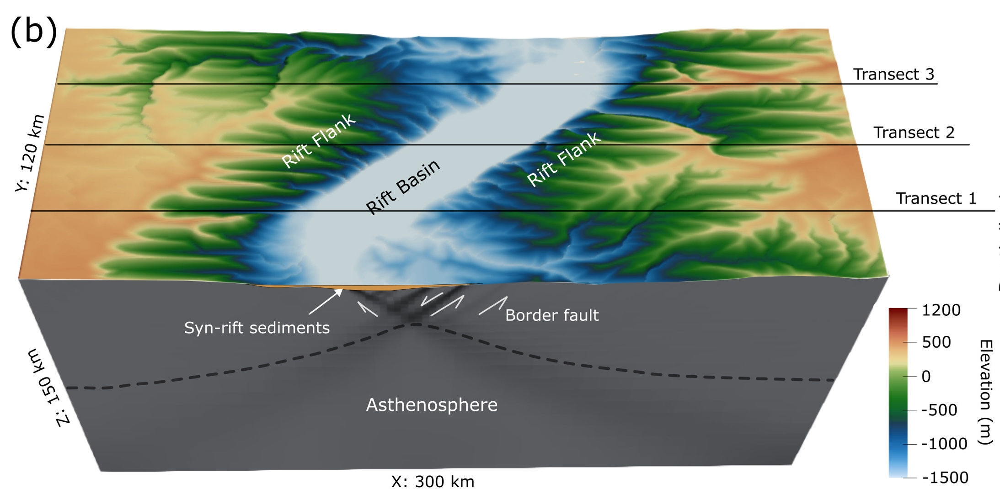
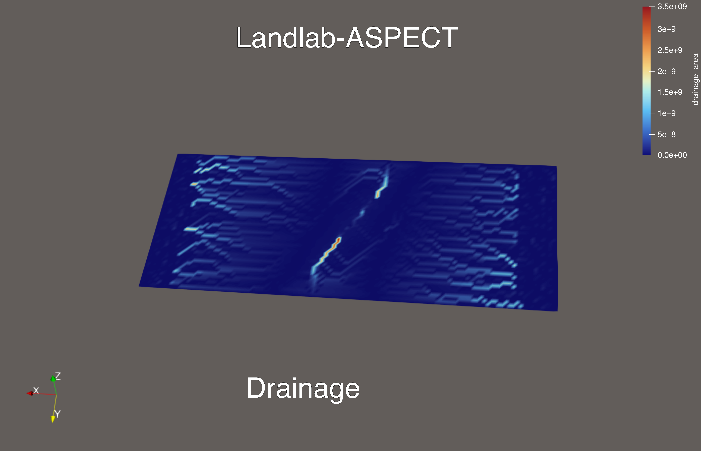
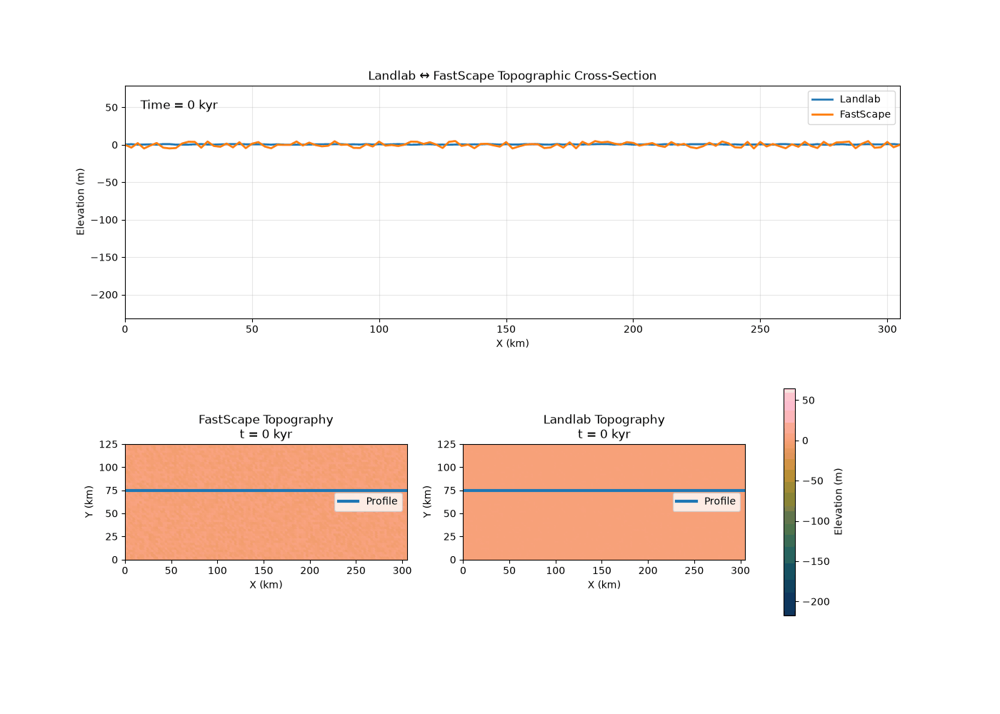
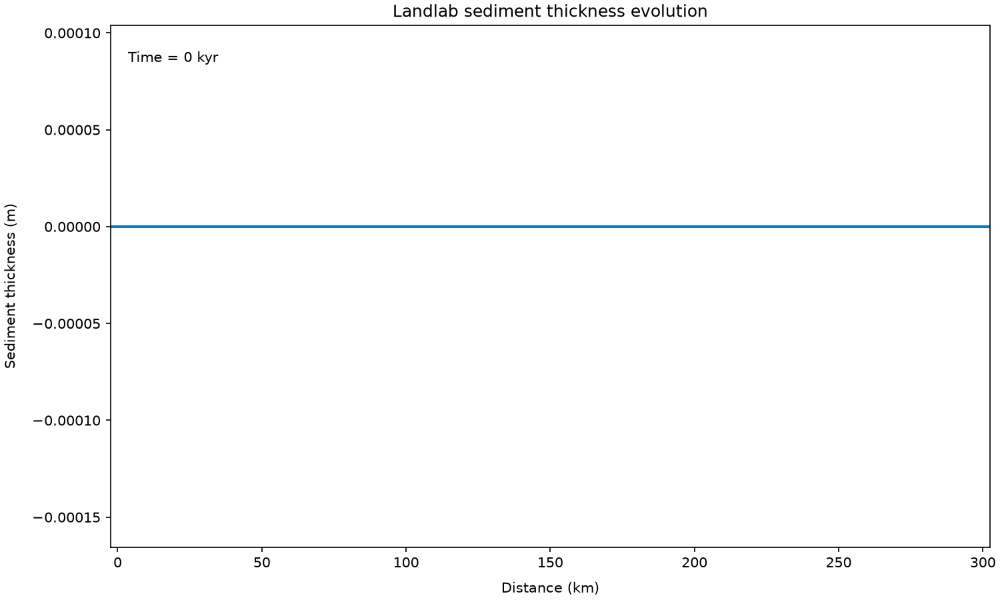
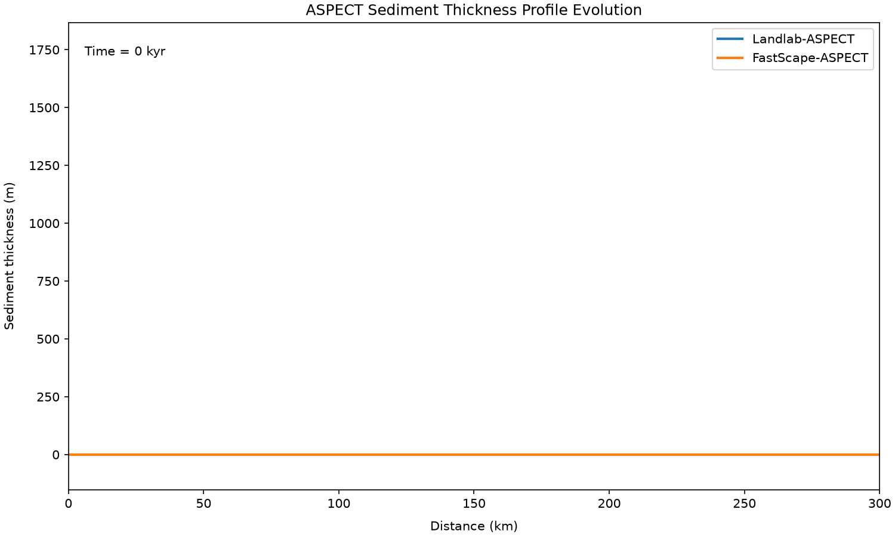

Deposition and Rift Basin Evolution
This benchmark tests the implementation of sediment deposition within the Landlab–ASPECT framework by reproducing the published FastScape–ASPECT model. Reproducing the published implementation provides a validation benchmark for the Landlab-based framework before it is extended to investigate sediment deposition, landscape evolution, and rift basin development in a broader range of tectonic settings.
Reference
{kind=link}

Fig. 1 Figure 1 (b) from Xue et al., 2025
Figures

Random noise in intial topograpgy
{kind=link}

Landlab output (landlab_00001.vtk to landlab_00052.vtk) and Fastscape output (topography_00000.vtk to topography_00050.vtk) field (topography)
{kind=link}

Landlab output (landlab_00001.vtk to landlab_00052.vtk) field (sediment_deposit__thickness)
{kind=link}

ASPECT output (solution.pdv) field (sediment_thick)
{kind=link}

Landlab–FastScape Field Correspondence
Fields That Match
The following fields have a direct or potentially meaningful correspondence between Landlab and FastScape.
Landlab field |
FastScape field |
Match |
Interpretation |
|---|---|---|---|
|
|
Direct |
Surface/topographic elevation. |
|
|
Direct name match |
Contributing drainage area. |
|
|
Possibly related |
These are not equivalent physical quantities. The numerical maximum happens to be the same in this particular dataset, but this should not be interpreted as a direct correspondence. |
The two strongest matches are therefore:
Landlab FastScape
------------------------------------------------
topographic__elevation <--> topography
drainage_area <--> drainage_area
Fields That Do Not Match
The following fields currently have no established correspondence in the other model. They are therefore kept separate rather than being paired based only on similar names or numerical values.
Landlab Fields Without a FastScape Match
Landlab field |
Description |
|---|---|
|
Sediment deposit thickness; no corresponding FastScape field has been identified. |
|
Sediment flux; no corresponding FastScape field has been identified. |
|
Sediment influx; no corresponding FastScape field has been identified. |
|
Sediment outflux; no corresponding FastScape field has been identified. |
|
Topographic steepest slope; no corresponding FastScape field has been identified. |
|
Water depth; no corresponding FastScape field has been identified. |
|
Flow receiver-node information; no corresponding FastScape field has been identified. |
|
Flow sink information; no corresponding FastScape field has been identified. |
|
Diffusivity-related field; no corresponding FastScape field has been identified. |
|
Linear diffusivity; no corresponding FastScape field has been identified. |
|
Flow data-structure information; no corresponding FastScape field has been identified. |
|
Flow-link information; no corresponding FastScape field has been identified. |
|
Upstream node ordering; no corresponding FastScape field has been identified. |
|
Surface-water discharge; no corresponding FastScape field has been identified. |
|
Water unit flux; no corresponding FastScape field has been identified. |
FastScape Fields Without a Landlab Match
FastScape field |
Description |
|---|---|
|
Constant field with a value of approximately |
|
Basement elevation; no corresponding Landlab field has been identified. |
|
Erosion rate; no corresponding Landlab field has been identified. |
|
Total erosion; no corresponding Landlab field has been identified. |
|
Catchment information; no corresponding Landlab field has been identified. |
|
FastScape |
|
Sea-level field; no corresponding Landlab field has been identified. |
Interpretation
Only fields with an established physical correspondence should be compared quantitatively. Fields that have not been matched are retained separately until their physical definitions and units can be established.
Summary
At the current stage, the clearest field correspondences are:
Landlab |
FastScape |
Status |
|---|---|---|
|
|
Direct match |
|
|
Direct name match; numerical comparison still required |
Other listed fields |
Other listed fields |
No direct match established |
The drainage_area correspondence should be investigated further before
using it for quantitative validation because the field names match but the
reported numerical ranges are substantially different.
Table of FastScape–ASPECT to Landlab–ASPECT Mapping
FastScape parameter |
Landlab implementation |
Status |
Notes |
|---|---|---|---|
Time step per ASPECT time step |
|
Implemented |
ASPECT timestep is subdivided into multiple Landlab substeps. |
Maximum timestep length |
|
Partial |
Controlled by ASPECT. No explicit timestep limiter. |
Uplift |
|
Implemented |
Vertical velocity from ASPECT updates the surface elevation. |
Horizontal advection |
|
Implemented |
Uses the ASPECT horizontal velocity stored in |
Flow routing |
|
Implemented |
Explicit in Landlab, implicit in FastScape. |
Stream-power erosion |
|
Implemented |
Uses drainage area and slope. |
Hillslope diffusion |
|
Implemented |
Linear diffusion. |
Marine transport |
|
Basic implementation |
Approximates marine sediment transport. |
Ghost nodes |
RasterModelGrid buffer |
Implemented |
Two ghost nodes surrounding the physical domain. |
Boundary conditions |
Landlab boundary status |
Missing |
No direct FastScape mapping. |
Node tolerance |
Coupling interpolation |
Missing |
One-to-one node mapping currently assumed. |
Additional refinement |
RasterModelGrid resolution |
Missing |
Fixed during grid construction. |
Vertical exaggeration |
— |
Not required |
Visualization only. |
Random seed |
— |
Missing |
Not currently required. |
Sediment diffusivity |
— |
Missing |
Not represented. |
Bedrock deposition coefficient |
— |
Missing |
No equivalent currently. |
Sediment deposition coefficient |
— |
Missing |
No equivalent currently. |
Sand/silt transport |
— |
Missing |
Requires additional implementation. |
Porosity evolution |
— |
Missing |
Not implemented. |
Sand/silt ratio |
— |
Missing |
Not implemented. |
Marine compaction |
— |
Missing |
Not implemented. |
Time stepping
FastScape
Number of FastScape timesteps per ASPECT timestep = 5
Landlab
n_substeps = 10
sub_dt = dt / n_substeps
Uplift
FastScape
Uplift and advect with FastScape = true
Landlab
vertical_velocity = self.determine_uplift_velocity(
ASPECT_dim,
ASPECT_fields_at_Landlab_nodes_dict,
)
self.elevation += vertical_velocity * sub_dt
Horizontal advection
FastScape performs horizontal advection internally.
Landlab computes the horizontal velocity from ASPECT and stores it
in the advection__velocity field.
self.determine_horizontal_velocity(
ASPECT_dim,
ASPECT_fields_at_Landlab_nodes_dict,
)
self.horizontal_surface_advector.run_one_step(sub_dt)
Flow routing
FastScape
Implicit (built into FastScape)
Landlab
self.flow_accumulator = FlowAccumulator(
self.model_grid,
flow_director="D8",
)
Erosion and deposition
FastScape parameters
Drainage area exponent = 0.5
Slope exponent = 1.0
Bedrock river incision rate = 1e-6
Bedrock diffusivity = 1e-2
Bedrock deposition coefficient = 1
Sediment deposition coefficient = 1
Sediment river incision rate = 1e-6
Sediment diffusivity = -1
Common Erosional Parameter Mapping
FastScape parameter |
Landlab parameter |
Remarks |
|---|---|---|
|
|
Numerically identical. |
|
|
Numerically identical. |
|
|
Numerically identical. Erodibility coefficient. |
|
|
Numerically identical. |
Note
Unit consistency: The FastScape parameters
Bedrock river incision rate = 1e-6
Bedrock diffusivity = 1e-2
are already expressed in per year units (m/yr and m²/yr, respectively). Landlab also expects these quantities in per-year units. Therefore, these values should be passed directly as
K = 1e-6
D = 1e-2
without dividing by self.s2yr = 60 * 60 * 24 * 365.25.
Dividing by self.s2yr would incorrectly convert the parameters from per year to per second, resulting in values that are too small by a factor of approximately \(3.16 \times 10^7\).
Scenario |
Incision/Uplift |
Diffusivity |
|---|---|---|
Low-relief landscapes |
\(10^{-7}\)–\(10^{-6}\) m/yr |
\(10^{-2}\)–\(10^{-1}\) m²/yr |
Moderate relief |
\(10^{-6}\)–\(10^{-5}\) m/yr |
\(10^{-1}\)–\(1\) m²/yr |
Active mountain belts |
\(10^{-5}\)–\(10^{-4}\) m/yr |
\(1\)–\(10\) m²/yr |
Regional-scale numerical models |
\(10^{-6}\)–\(10^{-5}\) m/yr |
\(1\)–\(100\) m²/yr |
Deposition Parameter Mapping
FastScape parameter |
Landlab parameter |
Remarks |
|---|---|---|
|
|
Approximate mapping. |
|
— |
No equivalent parameter in |
|
— |
|
|
— |
No separate sediment diffusivity is implemented. Hillslope diffusion is represented by |
Marine Parameter Mapping
FastScape parameter |
Landlab parameter |
Remarks |
|---|---|---|
|
|
Passed directly to |
|
— |
Not implemented. |
|
— |
Not implemented. |
|
— |
Not implemented. |
|
— |
Not implemented. |
|
— |
Not implemented. |
|
— |
Not implemented. |
|
— |
Not implemented. |
|
— |
Not implemented. |
Mesh Geometry & Boundaries
The following table summarizes the commonly used FastScape parameters, their closest equivalent in Landlab (when available), and their purpose.
FastScape Parameter |
Landlab Equivalent |
Description |
|---|---|---|
|
— |
Controls the vertical scaling used internally by FastScape. A value of
|
|
|
Refines the FastScape surface grid above the highest ASPECT surface resolution. Increasing this value produces a finer erosion/deposition grid. Landlab instead uses a fixed grid resolution specified during grid creation. |
|
|
Sets the random seed for stochastic processes, ensuring reproducible simulations whenever random initialization is used. |
|
None |
Specifies the highest adaptive mesh refinement level permitted at the ASPECT surface. This parameter has no equivalent in Landlab because Landlab uses a fixed-resolution grid. |
|
None |
Limits the allowable difference between the minimum and maximum surface refinement levels to maintain smooth mesh transitions. This parameter is not applicable to Landlab. |
|
self.submarine_diffuser = SimpleSubmarineDiffuser(
self.model_grid,
tidal_range=sd["tidal_range"],
shallow_water_diffusivity=sd["K"] / self.s2yr,
sea_level=sd["sea_level"],
)
|
Enables marine sediment transport and deposition below sea level. Landlab does not provide a built-in marine sedimentation component. |
|
User-defined uplift and advection |
Allows FastScape to apply tectonic uplift and horizontal advection in addition to erosion and deposition. In Landlab, uplift is typically imposed by the user, while advection requires additional components or custom implementation. |
subsection Box
set X repetitions = 30
set Y repetitions = 12
set Z repetitions = 15
set X extent = 300e3
set Y extent = 120e3
set Z extent = 150e3
|
x_extent = 300e3
y_extent = 120e3
spacing = 2500.0
ghost_nodes = 2
nrows = int(y_extent / spacing) + 1 + ghost_nodes
ncols = int(x_extent / spacing) + 1 + ghost_nodes
|
Uses ghost nodes outside the computational domain to simplify boundary condition calculations. Landlab instead handles boundaries using node status flags. |
|
None |
Defines the maximum allowable distance between an ASPECT surface node and the corresponding FastScape node when transferring data between the two models. This parameter is specific to the ASPECT–FastScape coupling. |
Boundary Conditions
The following table summarizes the available FastScape boundary conditions and their closest equivalents in Landlab.
FastScape Boundary Condition |
Landlab Equivalent |
Description |
|---|---|---|
Numerically identical subsection Boundary conditions
set Front = 1
set Right = 1
set Back = 1
set Left = 1
|
Numerically identical self.model_grid.set_closed_boundaries_at_grid_edges(
right_is_closed=True,
left_is_closed=True,
top_is_closed=True,
bottom_is_closed=True,
)
|
Boundary condition definitions Note In FastScape, boundary condition values have the following meaning:
During testing of the ASPECT–Landlab coupling, reflective
boundaries ( |
|
— |
Specifies a reflective (no-flux) boundary that prevents sediment from leaving the domain. Opposing reflective boundaries can produce special behavior in FastScape. |
|
— |
Prescribes sediment flux through the left boundary (\(\mathrm{m^2/yr}\)). |
|
— |
Prescribes sediment flux through the front boundary (\(\mathrm{m^2/yr}\)). |
|
— |
Prescribes sediment flux through the back boundary (\(\mathrm{m^2/yr}\)). |
|
— |
Treats ghost nodes as periodic in the front–back direction even when the physical boundaries are fixed. |
|
— |
Treats ghost nodes as periodic in the left–right direction even when the physical boundaries are fixed. |
Note
Several FastScape parameters (for example,
Maximum surface refinement level,Surface refinement difference, andNode tolerance) are specific to the ASPECT–FastScape coupling and therefore have no direct equivalent in Landlab.FastScape operates on an adaptively refined surface mesh provided by ASPECT, whereas Landlab uses a fixed structured grid such as
RasterModelGridorHexModelGrid.Boundary handling also differs between the two frameworks:
FastScape: Fixed (
1), reflective (0), optional ghost nodes, and prescribed sediment flux boundaries.Landlab: Open, closed, fixed-value, or fixed-gradient boundaries controlled through node status flags.
subsection Fastscape
set Number of fastscape timesteps per aspect timestep = 5
# Maximum timestep for FastScape
set Maximum timestep length = 5000
set Vertical exaggeration = -1
# How many levels FastScape should be refined above the maximum ASPECT surface resolution.
set Additional fastscape refinement = 1
set Fastscape seed = 1000
# As the highest resolution at the surface is 3 in the mesh refinement function,
# we set this the same.
set Maximum surface refinement level = 1
# The difference between the lowest and highest refinement level at the surface.
set Surface refinement difference = 0
set Use marine component = true
# Flag for having FastScape advect/uplift the surface.
set Uplift and advect with fastscape = true
# Because no boundaries are periodic, no flux is prescribed,
# and no advection occurs in FastScape,
# we do not need ghost nodes.
set Use ghost nodes = true
# Node tolerance for how close an ASPECT node must be
# to the FastScape node for the value to be transferred.
set Node tolerance = 0.001
# BC 1 is fixed and 0 is reflective
subsection Boundary conditions
set Front = 1
set Right = 1
set Back = 1
set Left = 1
# Flux per unit length through left boundary.
# set Left mass flux = 0
# set Front mass flux = 0
# set Back mass flux = 0
# Whether to set the ghost nodes periodic.
# set Back front ghost nodes periodic = false
# set Left right ghost nodes periodic = false
end
subsection Erosional parameters
set Drainage area exponent = 0.5
set Slope exponent = 1
# A negative value indicates varied flow.
# set Multi-direction slope exponent = -1
# Bedrock deposition coefficient.
set Bedrock deposition coefficient = 1
# Deposition coefficient for sediment.
set Sediment deposition coefficient = 1
# River incision rate for bedrock.
set Bedrock river incision rate = 1e-6
# River incision rate for sediment.
set Sediment river incision rate = 1e-6
# Bedrock diffusivity.
set Bedrock diffusivity = 1e-2
# Sediment diffusivity.
set Sediment diffusivity = -1
# Use a fixed erosional base level.
# set Use a fixed erosional base level = true
# set Erosional base level = 0
end
subsection Marine parameters
# FastScape sea level (m)
set Sea level = -2000
set Sand porosity = 0
set Silt porosity = 0
set Sand e-folding depth = 1e3
set Silt e-folding depth = 1e3
set Sand-silt ratio = 1
set Depth averaging thickness = 1e2
set Sand transport coefficient = 200
set Silt transport coefficient = 200
end
end
Landlab component initialization
All Landlab components are initialized in
initialize_landlab_components().
def initialize_landlab_components(self):
landlab_component_parameters = {
"LinearDiffuser": {
"D": 1e-2,
},
"FlowAccumulator": {
"flow_director": "D8",
},
"ErosionDeposition": {
"K": 1e-6,
"v_s": 1000.0,
"m_sp": 0.5,
"n_sp": 1.0,
"sp_crit": 0.0, # erosion threshold
},
"SimpleSubmarineDiffuser": {
"K": 1e-2,
"tidal_range": 0.0,
"sea_level": 0.0,
},
}
# LinearDiffuser
D = landlab_component_parameters["LinearDiffuser"]["D"] / self.s2yr
self.Diffusivity = self.model_grid.add_zeros(
"linear_diffusivity",
at="node",
)
self.Diffusivity[:] = D
self.linear_diffuser = LinearDiffuser(
self.model_grid,
linear_diffusivity=self.Diffusivity,
)
# FlowAccumulator
self.flow_accumulator = FlowAccumulator(
self.model_grid,
flow_director=landlab_component_parameters[
"FlowAccumulator"]["flow_director"],
)
# ErosionDeposition
ed = landlab_component_parameters["ErosionDeposition"]
self.erosion_deposition = ErosionDeposition(
self.model_grid,
K=ed["K"] / self.s2yr,
v_s=ed["v_s"],
m_sp=ed["m_sp"],
n_sp=ed["n_sp"],
sp_crit=ed["sp_crit"],
)
# SimpleSubmarineDiffuser
sd = landlab_component_parameters["SimpleSubmarineDiffuser"]
self.submarine_diffuser = SimpleSubmarineDiffuser(
self.model_grid,
tidal_range=sd["tidal_range"],
shallow_water_diffusivity=sd["K"] / self.s2yr,
sea_level=sd["sea_level"],
)
# Horizontal advection
self.horizontal_surface_advector = AdvectionSolverTVD(
self.model_grid,
fields_to_advect=self.elevation,
)
Missing FastScape Features in the Current Landlab–ASPECT Implementation
The following FastScape parameters do not currently have a direct equivalent in the present Landlab–ASPECT implementation.
Erosional parameters
Sediment river incision rate - FastScape supports separate incision rates for bedrock and sediment. -
ErosionDepositionuses a single stream-power coefficient (K).Sediment deposition coefficient - No equivalent parameter currently exists.
Sediment diffusivity - No separate sediment diffusivity is implemented.
Multi-direction slope exponent - Landlab currently uses the D8 flow-routing algorithm. - No equivalent multi-direction weighting parameter is implemented.
Use a fixed erosional base level - Not implemented.
Erosional base level - Not implemented.
Marine parameters
Sand porosity - Not implemented.
Silt porosity - Not implemented.
Sand e-folding depth - Not implemented.
Silt e-folding depth - Not implemented.
Sand-silt ratio - Not implemented.
Depth averaging thickness - Not implemented.
Separate sand transport coefficient -
SimpleSubmarineDiffuseruses a single diffusivity and does not distinguish sand transport.Separate silt transport coefficient -
SimpleSubmarineDiffuseruses a single diffusivity and does not distinguish silt transport.Marine compaction - Not implemented.
Reproducing the Liang (2025) EPSL Landlab–ASPECT Test
This note records the locations of the input files, output directory, and executable used for the Landlab–ASPECT coupling test based on the Liang (2025) EPSL.
Input/Output Directory
The parameter files and simulation outputs are stored in
/Users/biraj/cookbook_biraj/
fastscape_cookbook_ASPECT-300_deal-970_fastscape-290_biraj/
Liang_2025_EPSL_output_prm/
prm_input/
outputs/
test64_landlab_ada_denial_2.5_km-spacing_ghost/
This directory contains:
ASPECT
.prminput filesLandlab outputs
ASPECT outputs
VTK files
Simulation logs
ASPECT Executable
The simulation was run using the following ASPECT executable:
/Users/biraj/software/landlab_ASPECT_test_2/
aspect/build/aspect-release
Run Command
The simulation was executed using MPI with 14 processes.
activate uv environment
source /Users/biraj/software/landlab_ASPECT_test_2/aspect/.venv/bin/activate
/opt/homebrew/bin/mpirun -np 14 \
/Users/biraj/software/landlab_ASPECT_test_2/aspect/build/aspect-release \
3d_64c1t1s1ob1c1_copy_1_landlab_ada_denial.prm
9 minute to complete